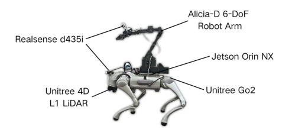
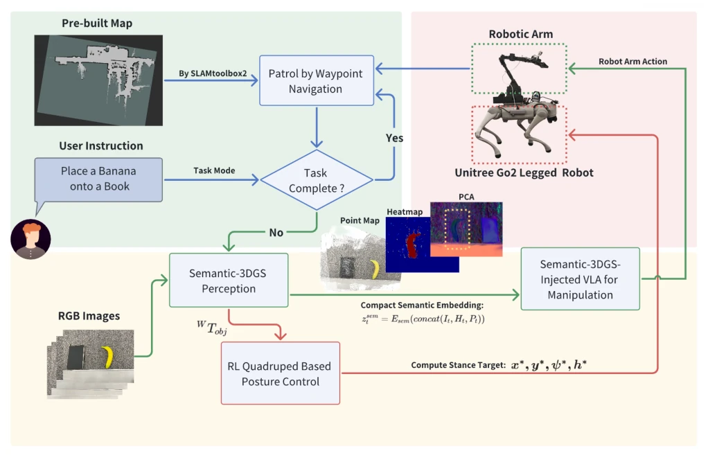
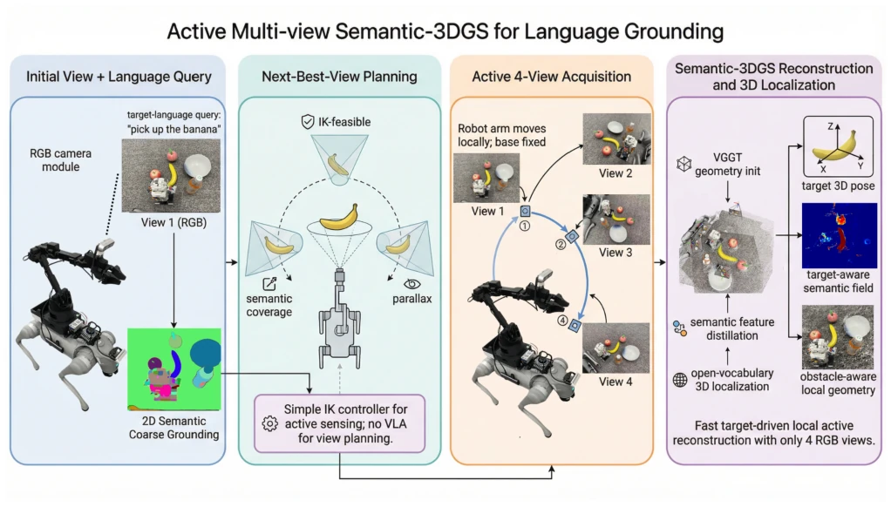
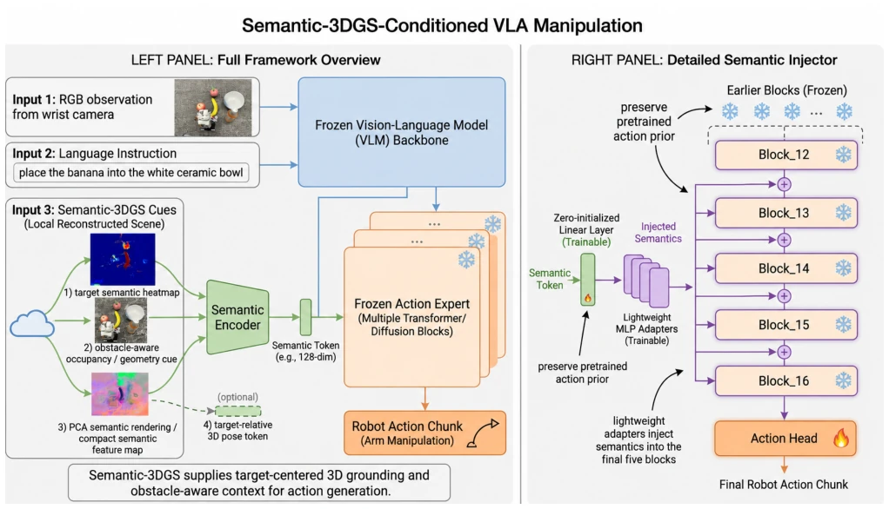
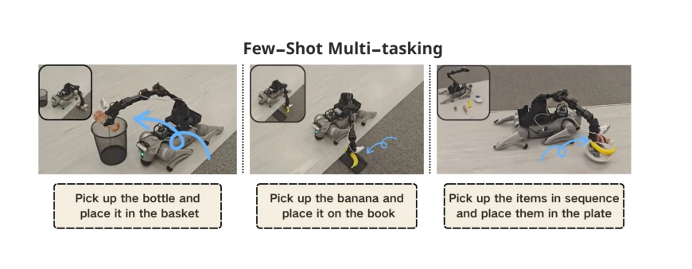
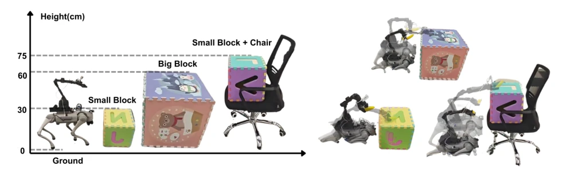
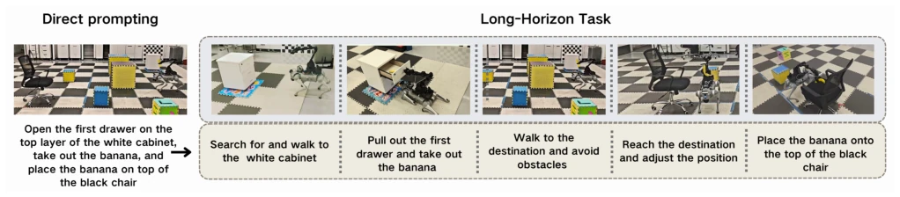
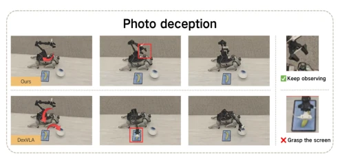
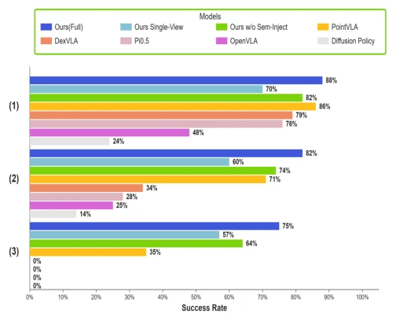
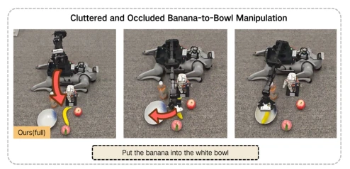

This paper prescribes a remedy for the 'high eyes, low hands' dilemma in embodied intelligence. By forcibly integrating language, vision, and geometry using Semantic-3DGS, it is indeed much more reliable than pure 2D VLA, especially under clutter and occlusion. The 60% long-horizon success rate is substantially higher than PointVLA, indicating that explicit 3D grounding is not a gimmick. However, the criticisms are also obvious: it takes 4 images to build a field and requires off-board execution on an RTX 4090; this 'real-time' capability is likely questionable in dynamic scenes. Moreover, it only supports few-shot, remaining far from true zero-shot generalization. However, injecting semantics into the diffusion late-block is a clever approach, preserving priors while adding 3D perception, serving as a paradigm of balancing.
研究动机Motivation
现有 VLA 模型如 OpenVLA [7] 和 DexVLA [20] 多依赖 2D 外观线索，导致在遮挡、杂乱或照片欺骗下容易失效。PointVLA [8] 虽引入 3D 点云，但缺乏语义密度和可刷新性，且难以处理动态目标。此外，移动操作常因基座定位不当导致失败，而现有工作多忽视可达性规划，仅关注末端执行器。本文旨在解决跨模态空间对齐问题，特别是针对家庭场景中的 open-vocabulary 目标定位与少样本操作，通过显式 3D 语义场增强鲁棒性。
Existing VLA models such as OpenVLA [7] and DexVLA [20] mostly rely on 2D appearance cues, leading to easy failure under occlusion, clutter, or photo deception. Although PointVLA [8] introduces 3D point clouds, it lacks semantic density and refreshability, and struggles to handle dynamic targets. Furthermore, mobile manipulation often fails due to improper base localization, while existing work largely neglects reachability planning, focusing solely on the end-effector. This paper aims to solve the cross-modal spatial alignment problem, specifically targeting open-vocabulary target localization and few-shot manipulation in home scenarios, enhancing robustness through an explicit 3D semantic field.

Figure 2: Robot platform: a Unitree Go2 Edu quadruped with a 6-DoF arm and an arm-mounted RGB camera for local perception and manipulation.
The system workflow is divided into four steps: 1) Active multi-view acquisition: selects 4 wrist views based on semantic coverage and complementarity scoring to avoid invalid motion. 2) Semantic-3DGS construction: initializes geometry using VGGT [18], distills CLIP/DINO features to form a refreshable local field. 3) Reachability base control: employs a PPO strategy to adjust the quadruped robot's posture, ensuring the manipulator is reachable. 4) VLA operation: injects 3D semantics into the late-block of the diffusion policy. The innovation lies in Semantic-3DGS as a shared interface and the 'late injection' mechanism, avoiding disruption of pre-trained priors. Compared to full-block injection, the Late-block uses only 5 adapters, resulting in lower inference latency, while retaining the continuous action prior of the pre-trained diffusion policy, achieving decoupling and fusion of perception and control. Additionally, this framework emphasizes task-driven local representation rather than a global map, making it suitable for home scenarios. Through PCA semantic tokenization and relative posture conditioning, the policy's generalization capability is further enhanced.

Figure 1: Overview of the proposed system. The robot patrols by waypoint navigation, switches to task mode after receiving instruction 𝑙, actively acquires four local wrist-camera views, constructs a local Semantic-3DGS, estimates the target pose 𝑊𝑇obj, repositions the base to a feasible stance (𝑥★,𝑦★,𝜓★,ℎ★), and executes a semantics-conditioned VLA manipulation policy.

Figure 3: Active multi-view Semantic-3DGS for language grounding. Target-driven view acquisition builds a compact local semantic 3D representation from four wrist-camera images.

Figure 4: Semantic-3DGS-conditioned VLA manipulation. A lightweight semantic injector conditions the final five frozen action-expert blocks through trainable adapters while preserving pretrained action priors.
Evaluated on the Unitree Go2, comparing with PointVLA [8] and DexVLA [20]. For long-horizon tasks with 50 trials, our method achieves a 60% success rate compared to PointVLA's 40%. In cluttered scenes, the rate is 74% versus 46%. It maintains 75% even under a 75cm height offset. Ablation studies show that removing Base-RL causes the success rate to drop to 22%, proving base planning is critical. The single-view variant shows degraded performance, verifying the necessity of multi-view acquisition. Additionally, in the Photo Deception test, our method successfully rejects photo interference, whereas DexVLA exhibits a high mis-grasp rate.

Figure 5: Few-shot multi-task manipulation scenarios. Test objects are unseen instances in task-specific fine-tuning, while semantically related object families may appear in the few-shot demonstrations.

Figure 6: Height-adaptation settings. Targets are placed at different platform heights to test stance selection and reachability- aware manipulation.

Figure 7: Long-horizon manipulation sequence. The robot opens the top drawer, retrieves the banana, closes the drawer, navigates to the target area, and places the banana on the black chair.

Figure 9: Photo-deception setup. The robot should manipu- late the real object while rejecting a photo-realistic distractor on a flat screen.

Figure 8: Success rates on the few-shot multi-task manipula- tion benchmark. (1) Place the banana on the book. (2) Place the bottle into the basket. (3) Place the stuffed toy, banana, and bottle into the bowl in the specified order.

Figure 10: Cluttered banana-to-bowl benchmark with physi- cal distractors and strong target occlusion.